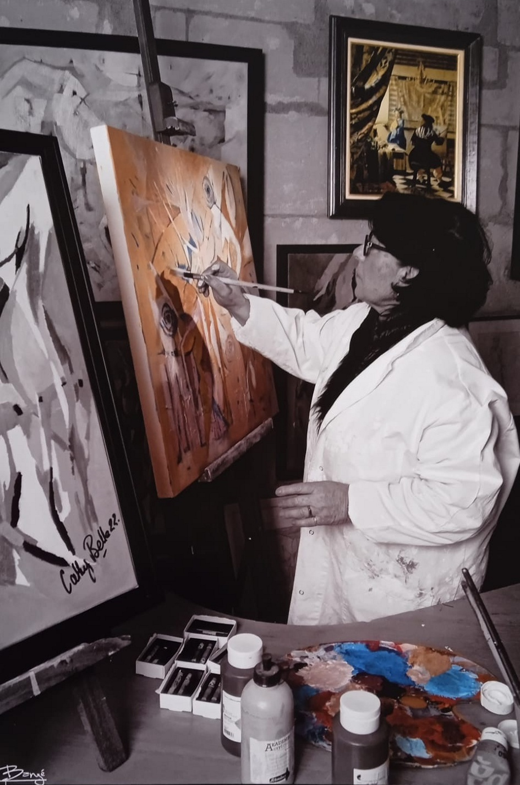

Cathy Belle / Parcours artistique
Une vie
en peinture.
Du dessin à la matière,
de l’abstraction au vivant.
Un parcours nourri par les expositions, la recherche picturale et le plaisir de transmettre.
Explorer le parcours
01 / Expositions
Individuelles
& collectives
2026
- Exposition personnelleDans le Jardin
2022
- Printemps des Femmes, L’Art au Féminin — Chambray-lès-Tours (37)
- Exposition 75 artistes : Une œuvre pour l’Hôpital de Tours (37)
- Exposition au Serpent à Plumes — Tours (37)
2021
- Salon d’art « Lionel Couture » — Saint-Pourçain-sur-Sioule (03)
2020
- Fragments d’Elle — Médiathèque, Azay-le-Rideau (37)
2018
- Atelier Mode d’emploi, Ponts des Arts — Artannes (37)
- Exposition collective, Galerie Lansari — Artannes (37)
2016
- Talents de Femmes — Femmes de Talent, Inner Wheel — Sarlat (24)
- Les Hivernales — Sarlat (24)
2003–2016
- Exposition permanente, Atelier Villa Mege — Sarlat (24)
1995–2003
- Galerie personnelle — Candes-Saint-Martin (37)
02 / Autres participations
Lieux & rencontres
Expositions et événements mentionnés dans le CV, sans date précisée.
- Rencontres Internationales d’Art Mural — Beaufort-en-Vallée (49)
- Installation contemporaine De Beforter — Luxembourg
- Festival Rues des Arts — Nancy (54)
- Galerie 17 — Royan (17)
- Salon d’Art Contemporain — Dammarie-les-Lys (77)
- Château de Coucillon (72)
- Salon des Artistes — Villevêque (49)
- Maison des Associations — Cinq-Mars-la-Pile (37)
- Exposition contemporaine de Saint-Grégoire — Rennes (35)
- Galerie Agnès Sorel — Loches (37)
- Carrés de Loches (37)
- Salon d’été — Saint-Mathurin-sur-Loire (49)
- IVe Biennale de Savonnières (37)
- My Heart France — Ballan, IEM Charlemagne (37)
- Galerie Art Présent — Paris (75)
- Hôtel de Ville — Ballan (37)
- Fêtes des Artistes — Beaulieu-lès-Loches (37)
- Maison du Don — Tours (37)
- Fêtes des peintres — Chanceaux (37)
- Chevalet de Touraine (37)
- Siège EDF — Banques de Tours (37)
03 / Transmission
Apprendre.
Transmettre.
- Création d’ateliers associatifs
- Interventions en milieu scolaire
- Animations picturales
- Ateliers personnels
- Présidente d’associations artistiques